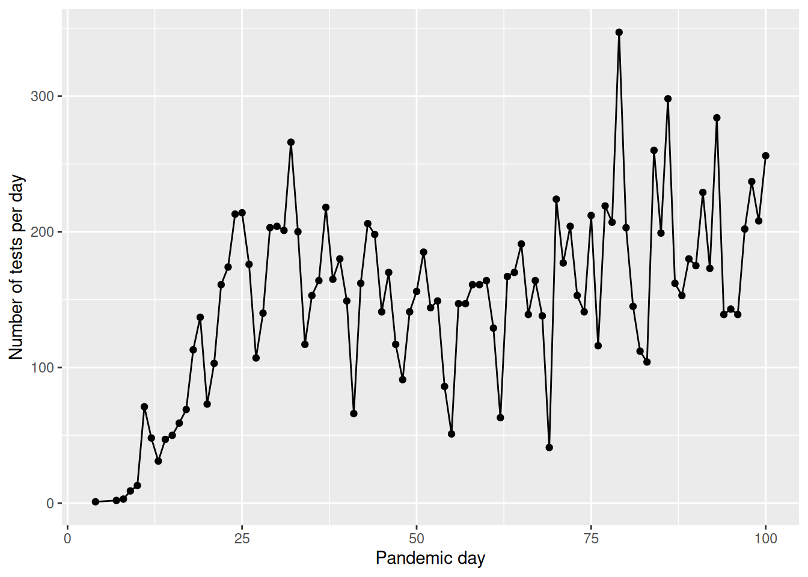
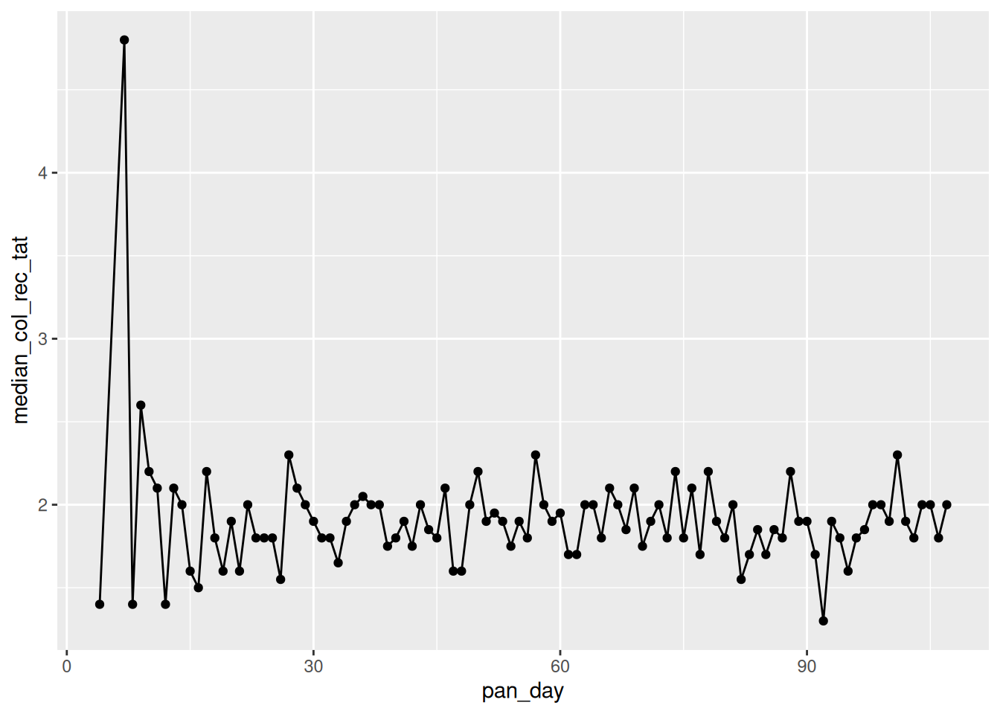

if (!require("ggplot2", quietly = TRUE))
install.packages("ggplot2")
library(ggplot2)
if (!require("medicaldata", quietly = TRUE))
install.packages("medicaldata")
library(medicaldata)
if (!require("dplyr", quietly = TRUE))
install.packages("dplyr")
library(dplyr)
if (!require("tidyr", quietly = TRUE))
install.packages("tidyr")
library(tidyr)Solutions: Medical Data
Materials adapted from Adrien Osakwe, Larisa M. Soto and Xiaoqi Xie.
Use the covid_testing data set from package medicaldata and everything you’ve learned so far to answer the following questions:
Clinics included
How many clinics participated in the study, and how many valid tests were performed on each one? Did the testing trend vary over time?
covid<-covid_testingNumber of clinics
clinics<- covid %>%
dplyr::select(subject_id,clinic_name,result,pan_day) %>%
dplyr::distinct()
length(unique(clinics$clinic_name))[1] 88Number of valid tests
clinics %>%
dplyr::filter(result!="invalid") %>%
dplyr::group_by(clinic_name) %>%
dplyr::summarize(n_test = length(clinic_name)) %>%
dplyr::arrange(desc(n_test))# A tibble: 88 × 2
clinic_name n_test
<chr> <int>
1 clinical lab 7397
2 emergency dept 3353
3 oncology day hosp 509
4 nicu 285
5 laboratory 262
6 picu 258
7 care ntwk 231
8 line clinical lab- 218
9 inpatient ward a 207
10 radiation oncology 161
# ℹ 78 more rows
Note
Step-by-Step Breakdown
filter(result != "invalid")
You are “cleaning the pipe.” Before doing any math, you remove the “noise.”
The Question: “Is this a real test result?”
The Action: Only rows where the result is NOT “invalid” are allowed to move to the next step.
group_by(clinic_name)
You are “sorting the mail.” R doesn’t calculate anything yet; it just creates invisible folders for each clinic.
- The Action: R puts all “Clinic A” rows in one bucket and “Clinic B” rows in another.
summarize(n_test = length(clinic_name))
You are “collapsing the buckets.” This is where the many rows of your original data become one single summary row per group.
The Action: Inside each clinic’s bucket, R counts how many items are there.
Note: You can also use the shorthand
n()instead oflength(clinic_name)—it does the exact same thing!
arrange(desc(n_test))
You are “ranking the results.”
- The Action: By default, R sorts low-to-high.
desc()(descending) flips it so the clinic with the most tests appears at the very top.
Testing trend over time
covid %>%
filter(pan_day<=100) %>%
group_by(pan_day) %>%
summarize(n=length(result)) %>%
ggplot(.,aes(x=pan_day,y=n))+
geom_point()+
geom_line()+
ylab("Number of tests per day")+
xlab("Pandemic day")
Number of positive tests
How many patients tested positive vs negative in the first 100 days of the pandemic? Do you notice any difference with the age of the patients? Hint: You can make two age groups and calculate the percentage each age group in positive vs negative tests.
Number of positive tests in the first 100 days
covid %>%
filter(result!="invalid" & pan_day<=100) %>%
group_by(result) %>%
summarize(n=length(subject_id))# A tibble: 2 × 2
result n
<chr> <int>
1 negative 13225
2 positive 780Tests by age group
tsts_age<-covid %>%
filter(result!="invalid" & pan_day<=100) %>%
mutate(age_group=ifelse(age<=21,"children","adults")) %>%
group_by(age_group,result) %>%
summarize(n=length(subject_id)) %>%
mutate(percent_total=n/sum(n)*100)
tsts_age# A tibble: 4 × 4
# Groups: age_group [2]
age_group result n percent_total
<chr> <chr> <int> <dbl>
1 adults negative 2627 92.1
2 adults positive 226 7.92
3 children negative 10598 95.0
4 children positive 554 4.97
Note
1. The Cleaning Phase (filter)
filter(result != "invalid" & pan_day <= 100)Before any analysis, you are narrowing the focus to high-quality, early-pandemic data.
result != "invalid": Removes tests that didn’t work (QC failure).&: A logical “AND.” Both conditions must be true.pan_day <= 100: Only includes data from the first 100 days of the pandemic.
2. The Classification Phase (mutate)
mutate(age_group = ifelse(age <= 21, "children", "adults"))You are creating a new column “on the fly” to categorize your patients.
ifelse(test, yes, no): This is a logical switch. If a patient is 21 or younger, they are labeled “children”; otherwise, they are “adults.”
3. The Organization Phase (group_by)
group_by(age_group, result)This is the most critical step. You are telling R to create sub-buckets for every combination of age and test outcome (e.g., “adults-positive,” “adults-negative,” “children-positive,” etc.).
4. The Aggregation Phase (summarize)
summarize(n = length(subject_id))R collapses the buckets created in the previous step.
- It counts how many
subject_identries are in each bucket and stores that number in a new column calledn.
5. The Calculation Phase (mutate)
mutate(percent_total = n / sum(n) * 100)This is a “Smart Calculation.” Because the data is still grouped by age_group, the sum(n) happens separately for each group.
Example: For the “adults” rows, it divides their count by the total number of adults.
This gives you the percentage of results within that specific age group, rather than the percentage of the entire dataset.
Notes on sum(n)
In this specific code, the percent_total will represent the percentage of results per age group (e.g., what % of children were positive vs. negative). If you wanted the percentage of the entire table, you would need to ungroup() the data before this last mutate.
Processing times
Look at the specimen processing time to receipt, did the sample processing times improve over the first 100 days of the pandemic? Plot the median processing times of each day over the course of the pandemic and then compare the summary statistics of the first 50 vs the last 50 days
covid %>%
group_by(pan_day) %>%
dplyr::summarise(median_col_rec_tat=median(col_rec_tat)) %>%
ggplot(.,aes(x=pan_day,y=median_col_rec_tat)) +
geom_point()+
geom_line()
covid %>%
mutate(pan_day_group=ifelse(pan_day<50,"first_50","last_50")) %>%
group_by(pan_day_group) %>%
dplyr::summarise(mean_col_rec_tat=mean(col_rec_tat),
median_col_rec_tat=median(col_rec_tat),
min_col_rec_tat=min(col_rec_tat),
max_col_rec_tat=max(col_rec_tat))# A tibble: 2 × 5
pan_day_group mean_col_rec_tat median_col_rec_tat min_col_rec_tat
<chr> <dbl> <dbl> <dbl>
1 first_50 3.26 1.9 0
2 last_50 9.41 1.9 0
# ℹ 1 more variable: max_col_rec_tat <dbl>